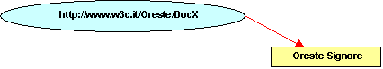

Table of contents
L' evoluzione del Web
-
Dal Web di Documenti ...
-
... verso un Web di dati e servizi che sia:
-
Meaning-ful
-
on Everything
-
for Everyone
-
Interoperable
-
... e Trustworthy, Evolvable, Decentralized
World Wide Web Consortium (W3C)

“To lead the World Wide Web to its full potential
by developing protocols and guidelines that ensure
long-term growth for the Web”
-
Fondato da Tim Berners-Lee in 1994
-
Definisce Recommendation aperte (Web
Standards)
-
Svolge attività di formazione, sviluppa linee
guida…
-
È un forum neutrale per creare consenso
sugli standard web
-
Gli standard proposti non derivano da posizioni
dominanti sul mercato
Alcuni principi guida del W3C
-
Le tecnologie Web dovrebbero
essere interoperabili
-
il Web è basato su un ampio spettro di
tecnologie
-
nessuna tecnologia può pretendere di coprire
tutte le esigenze del Web
-
quindi l' interoperabilità delle
tecnologie è assolutamente necessaria
-
Gli Standard Web dovrebbero
essere degli "open standard", quindi
non-proprietari
-
Il Web deve essere accessibile a
tutti
Il W3C è internazionale
-
World Wide Web Consortium
-
I membri W3C
-
sono la forza del W3C
-
sviluppano le Recommendation
-
guidano l' evoluzione del Web (Pieghevole)
W3C: gli obiettivi a lungo termine

-
Web for Everyone
-
indipendentemente da hardware, software,
infrastruttura di rete, lingua madre, cultura,
posizione geografica, capacità fisiche o
mentali, …
-
Web on Everything
-
non solo PC, ma anche Cellulari, PDA,
Televisione,…
-
Knowledge Base, Advanced data
searching and sharing
-
informazione utilizzabile da esseri umani e
anche macchine
-
Trust and Confidence
-
tecnologie per un ambiente collaborativo
-
un Web con identificazione delle
responsabilità, sicurezza, fiducia,
riservatezza
Lo stack delle tecnologie W3C…
…e la lista delle Recommendation
L' attività dei Working Group
Nascita di una Recommendation
Web for Everyone: motivazioni e obiettivi
-
Valore sociale del Web: comunicazione interpersonale,
commercio, condivisione di conoscenza
-
Rendere questi benefici disponibili a tutti,
indipendentemente da hardware, software, infrastruttura
di rete, lingua madre, cultura, posizione geografica,
capacità fisiche o mentali
-
W3C investe per supportare l' estensione delle
tecnologie web e dei relativi benefici.Web
accessibility, internazionalizzazione, device
independence sono particolarmente importanti.
-
Traduzioni di specifiche, notizie, comunicati stampa in
varie lingue
-
Gli Uffici W3C
WAI (Web Accessibility Initiative)
 Le tre linee guida:
Le tre linee guida:
-
Web Content Accessibility Guidelines
(WCAG 1.0, 1999, Recommendation)
come creare contenuti Web accessibili
e ora ...
WCAG 2.0 (Working Draft)
-
Authoring Tool Accessibility Guidelines
(ATAG 1.0, 2000, Recommendation)
come progettare strumenti di authoring
utilizzabili da autori disabili, e che producono
contenuti Web accessibili
e ora ...
ATAG 2.0 (Working Draft)
-
User Agent Accessibility Guidelines
(Browser, UAAG 1.0,
2002, Recommendation)
cosa devono fare gli sviluppatori di software per
migliorare l' accessibilità dei mainstream
browser a dei multimedia player per
consentire un migliore accesso alle risorse Web per le
persone affette da deficit uditivi, cognitivi, visivi,
fisici
WCAG 1.0: le 14 guideline
-
Fornire alternative equivalenti per il
contenuto visivo e audio.
Fornire un contenuto che, una volta presentato
all' utente, svolga essenzialmente la stessa funzione o
raggiunga lo stesso scopo del contenuto visivo o
acustico.
-
Non fare affidamento unicamente sul
colore.
Assicurarsi che il testo e la parte grafica siano
comprensibili se consultati senza il colore
-
Usare marcatori e fogli di stile e farlo in
maniera appropriata.
Marcare i documenti con gli appositi elementi
strutturali. Controllare la presentazione con i fogli
di stile piuttosto che con gli elementi e gli attributi
di presentazione.
-
Rendere chiaro mediante il markup l'uso del
linguaggio naturale.
Utilizzare marcatori che agevolino la pronuncia o
l' interpretazione di testi in lingua straniera o con
abbreviazioni e acronimi.
-
Creare tabelle che si trasformino in maniera
elegante.
Assicurarsi che le tabelle abbiano la marcatura
necessaria per essere trasformate dai browser e da
altri user agent.
-
Garantire che le pagine che utilizzano le
tecnologie più recenti si trasformino in maniera
elegante.
Assicurarsi che le pagine rimangano accessibili
anche quando le tecnologie più recenti non sono
supportate o sono disattivate.
-
Garantire all'utente il controllo dei mutamenti
di contenuto dipendenti dal tempo.
Assicurarsi che il movimento, il lampeggiare, lo
scorrere e l' autoaggiornamento degli oggetti possa
essere messo in pausa o arrestato.
-
Garantire l'accessibilità diretta delle
Interfacce Utente Incorporate.
Assicurarsi che l' interfaccia utente sia conforme
ai principi di progettazione accessibile: accesso alle
funzionalità indipendente dal dispositivo,
possibilità di operare da tastiera, comandi
vocali, etc.
-
Progettare per garantire l'indipendenza dal
dispositivo.
Usare funzioni che permettano di attivare gli
elementi della pagina mediante una varietà di
dispositivi.
-
Usare soluzioni temporanee.
Usare soluzioni provvisorie per l'
accessibilità, affinché le tecnologie
assistive e i browser più vecchi possano operare
correttamente.
-
Usare le tecnologie e le linee guida del
W3C.
Usare le tecnologie W3C (in conformità con
le specifiche) e seguire le linee guida per l'
accessibilità. Nei casi in cui non sia possibile
usare una tecnologia W3C, oppure nell' utilizzarla si
ottenesse materiale che non si trasforma in maniera
elegante, fornire una versione alternativa, che sia
accessibile, del contenuto.
-
Fornire informazioni di contesto e
orientamento.
Fornire informazioni di contesto e orientamento
per aiutare gli utenti a comprendere pagine o elementi
complessi.
-
Fornire meccanismi di navigazione
chiari.
Fornire meccanismi di navigazione chiari e
consistenti - informazioni di orientamento, barre di
navigazione, una mappa del sito, etc. - per aumentare
la probabilità che una persona possa trovare sul
sito ciò che sta cercando.
-
Garantire che i documenti siano chiari e
semplici.
Garantire che i documenti siano chiari e semplici,
affinché possano essere più facilmente
comprensibili.
WCAG 1.0: livelli di conformità
-
Per ogni guideline una serie di check point (65 in
totale)
-
Ogni checkpoint ha un livello di priorità
-
Priorità 1: Deve
(must) essere soddisfatto,
altrimenti per uno o più gruppi sarebbe
impossibile accedere al contenuto.
-
Priorità 2: Dovrebbe
(should) essere soddisfatto,
altrimenti, per uno o più gruppi potrebbe
essere difficile accedere all'
informazione
-
Priorità 3: Può
(may) essere considerato dallo
sviluppatore della pagina, altrimenti uno o
più gruppi potrebbero incontrare qualche
difficoltà nell' accesso all'
informazione.
Conformance
level:
-
 Level "A": sono
soddisfatti tutti i checkpoint di Priorità 1
Level "A": sono
soddisfatti tutti i checkpoint di Priorità 1
-
 Level "AA": sono
soddisfatti tutti i checkpoint di Priorità 1 e 2
Level "AA": sono
soddisfatti tutti i checkpoint di Priorità 1 e 2
-
 Level "AAA": sono
soddisfatti tutti i checkpoint di Priorità 1, 2
e 3
Level "AAA": sono
soddisfatti tutti i checkpoint di Priorità 1, 2
e 3
La dichiarazione di conformità è
responsabilità del webmaster o del content
provider.
Lo spirito è quello di dimostrare l' impegno
e testimoniare i risultati conseguiti.
WCAG 2.0
-
Evoluzione delle WCAG 1.0
-
Stessi principi ispiratori
-
Struttura diversa
-
Considerano anche aspetti di qualità
del sito:
-
usabilità
-
rispetto delle specifiche tecniche.
-
Concetti generali da applicare ai contenuti
web
-
Principi di progettazione non specifici per
HTML, XML, o altre tecnologie
-
Principi da applicare a una varietà di
situazioni e tecnologie, anche non ancora
esistenti
-
Attualmente a livello di Working Draft
(l' ultimo pubblico è quello del
30 giugno 2005)
WCAG e disposizioni di legge
-
La frammentazione degli standard deve
essere evitata
-
Molte normative nazionali fanno riferimento a WCAG 1.0
-
La normativa italiana (4/2004) e le regole tecniche:
-
riferimenti a WCAG 1.0, Section 508
-
considera aspetti discussi in letteratura e i
principi delle WCAG 2.0
-
può determinare sanzioni
-
doveva individuare criteri oggettivi che
non possano essere oggetto di controversie
-
indica chiaramente che la qualità
è il requisito essenziale
-
Occorre un atteggiamento collaborativo
Considerazioni
-
Universal access da sempre tra gli obiettivi a
lungo termine del W3C
-
Tutte le normative fanno riferimento a
WCAG
-
Adeguarsi (e partecipare) significa essere in
anticipo sui tempi e salvaguardare gli
investimenti
Web on Everything: motivazioni e obiettivi
-
Nuovi dispositivi sono in grado di accedere al Web
(mobile phones, smart phones, PDA, sistemi televisivi
interattivi, sistemi di risposta vocale, chioschi,
alcuni dispositivi domestici)
-
Rendere l' accesso al web da qualsisi dispositivo
semplice, facile e comodo come da un normale desktop
Mobile web access
-
Motivazioni trainanti
-
-
Mobile commerce
-
Mobile entertainment
-
Mobile enterprise
-
Location-based services
-
Comunicazione
-
Benefici
-
-
Imprese nel settore della tecnologia dei
dispositivi mobili (mobile technology)
-
In generale la società e le imprese
Non manca l' offerta di dispositivi ...
Fonte: RusselBeattie.com
Le sfide
-
Input difficoltoso per l' utente
-
Output di dimensioni limitate
-
Ambiente complesso
-
Limitazioni di banda
-
Connettività discontinua
Come nel 1996 ...
|
Web 1996
|
Mobile Web 2004
|
|
Troppo lento
|
Troppo lento
|
|
Manca l' interoperabilità
|
Manca l' interoperabilità
|
|
"Qual è la novità?"
|
"Qual è la novità?"
|
|
Tutela dei minori
|
Tutela dei minori
|
|
Non accessibile
|
Non accessibile
|
... ma non proprio come nel 1996
|
Web 1996
|
Mobile Web 2004
|
|
Pochi utenti connessi
|
Molti utenti potenzialmente connessi
|
|
Mancanza di contenuti
|
Una enormità di contenuti potenzialmente
disponibili
|
|
Poche imprese nel settore
|
Grosso potenziale industriale
|
Obiettivi
-
Oggi, il mobile Web access è problematico per:
W3C e Mobile: quattro fasi
Qualche riferimento
-
HTML
-
-
W3C submissions (1997/98)
-
"HDML - Handheld Device Markup Language
Submission" - Diventato WAP WML 1.0
-
"Compact HTML" - Diventato i-mode
-
W3C Recommendation "XHTML Basic" (2000) - Diventato
WAP 2.0
-
Oggi: (X)HTML ampiamente supportato dai telefoni
cellulari
-
Multimedia
-
-
SMIL
-
SVG - Mobile SVG
-
Mobile SVG sta diventando lo strumento per
la grafica vettoriale su dispositivi mobili!
-
Multiplatform (Figura1)
-
-
CC/PP ("Client Capabilities/Preferences Profile")
(Figura2 )
-
Authoring (Stylesheets, CDF: Compound Document
Formats)
-
Multimodal
-
-
Tecnologie di input indicate per dispositivi
mobili: voce, scrittura, espressione, …
-
Speech recognition (VoiceXML, InkML, EMMA, …)
La W3C Mobile Web Initiative!
-
W3C
MWI Workshop (Barcelona 18-19 Nov 2004)
-
Best practices for mobile web content
-
Marchio "MobileOK"
-
Database condiviso delle caratteristiche dei
dispositivi
-
Collaborazione con OMA
-
Possibile attività futura
-
Framework/profile, training, marketing, validation
services, test suites, discovery, etc.
-
A lungo termine: Web on Everything - Trasporti,
entertainment, apparecchiature, Ubiquitous Web
Considerazioni
-
Tecnologia e contesto in grande espansione
-
È il momento di investire risorse
-
L' interoperabilità potrebbe essere l' arma
vincente
-
Importante giungere in tempo sul mercato
-
Rischi nell' investire senza standard o in direzioni
sbagliate
-
Attori o spettatori?
-
Competitivià
Knowledge Base: motivazioni e obiettivi
-
Il Web non è solo un immenso contenitore dal
quale attingere informazioni
-
Le macchine possono svolgere del lavoro utile, noioso e
lungo per gli esseri umani
I limiti attuali
-
Nel web tradizionale si rappresenta l'
informazione utilizzando:
-
linguaggio naturale
-
grafica, elementi multimediali, struttura della
pagina
-
Spesso è necessario combinare le
informazioni (provenienti da fonti diverse)
-
Per gli esseri umani è facile ...
-
dedurre fatti da informazioni incomplete
-
creare e seguire associazioni mentali
-
provarie varie esperienze sensoriali
-
aggregare le informazioni indipendentemente dalle
tecnologie utilizzate
-
... ma le macchine non sono intelligenti!
-
non possono utilizzare informazioni parziali
-
hanno difficoltà ad aggregare informazioni
strutturate in forma diversa
I have a dream ...
"The entertainment system was belting out the Beatles "We
Can Work It Out" when the phone rang. When Pete answered,
his phone turned the sound down by sending a message to
all other local devices that had a volume
control. "
...
His sister, Lucy, was on the line from the doctor’s
office At the doctor’s office, Lucy instructed her
Semantic Web agent through her handheld Web
browser. The agent promptly retrieved
information about ...”
(From: The Semantic Web, by Tim Berners-Lee, James
Hendler and Ora Lassila, Scientific American, May 2001)
http://www.scientificamerican.com/2001/0501issue/0501berners-lee.html
L' architettura del Semantic Web

-
Il Semantic Web ...
-
-
è un' infrastruttura basata su metadati per
poter svolgere ragionamenti sul Web
-
estende, non sostituisce il web attuale
Cosa sono i metadati?
-
Informazioni, elaborabili automaticamente (machine
understandable), relative a una risorsa web o a
qualche altra cosa
-
... data about data
-
... informazioni che possono essere utilizzate da
intelligent software agents per fare un uso
appropriato delle risorse
-
... dati ...
-
... che possono essere descritti da altri
metadati ...
Perché i metadati?
-
Nel Web di oggi tutte le informazioni sono "machine
readable"
-
Nel Semantic Web le informazioni devono essere
"machine understandable". Quindi occorrono:
-
nomi non ambigui per le risorse (URI)
-
un data model condiviso per esprimere i
metadati (RDF)
-
un modo per accedere ai metadati sul Web
-
vocabolari condivisi (ontologie)
Cosa è RDF?
-
L' uso efficace dei metadati richiede la definizione di
convenzioni per:
-
semantica (definita dalle singole
comunità disciplinari)
-
sintassi (organizzazione dei data element
per l' elaborazione automatica)
-
struttura (vincolo formale sulla sintassi)
-
RDF:
-
Resource Description Framework
-
strumento base per codifica,
scambio e riutilizzo di metadati
strutturati
-
consente l' interoperabilità tra
applicazioni che si scambiano sul Web informazioni
machine-understandable
RDF è per il Semantic Web ciò che HTML
è stato per il web
RDF Data Model: resources
-
Qualunque cosa descritta da una espressione RDF viene
detta risorsa (resource)
-
Una risorsa può essere:
-
una pagina web
-
una parte di pagina web
-
un elemento XML all' interno del documento sorgente
-
una collezione di pagine web
-
un oggetto non direttamente accessibile sul web
(libro, dipinto, oggetto, ...)
-
Le risorse sono sempre individuate da un Universal
Resource Identifier (URI)
Il Data Model RDF: gli statement
Il concetto fondamentale:
-
Statement: una tupla di un
subject (o resource), un predicato (o
proprietà) e un value (o object).
ovvero:
-
Una risorsa, con una proprietà distinta da un
nome, e un valore della proprietà per quella
specifica risorsa, costituisce un RDF statement
L' oggetto di uno statement può essere un'
espressione, o anche un' altra risorsa.
Un esempio banale
Due espressioni equivalenti in linguaggio
naturale:
-
Oreste Signore is the author of DocX
-
The author of DocX is Oreste Signore
In RDF:
|
Resource
|
http://www.w3c.it/Oreste/DocX
|
|
Property
|
author
|
|
Value
|
Oreste Signore
|
Con questa rappresentazione grafica:

Un esempio di statement
La persona identificata dal Codice
Fiscale SGNRST99A99X111Y has Name Oreste Signore, Email
oreste@w3.org, e Affiliation C.N.R.. La risorsa
http://www.w3c.it/Oreste/DocX has Author questa
persona .

Grafi e Web: prima di RDF
Per le macchine: milioni di risorse collegate
...
... nessuna informazione sul tipo di risorse e di
relazioni
Grafi e Web: dopo RDF
Per le macchine: milioni di risorse collegate
...
... con informazioni sul tipo di risorse e di
relazioni
RDF : un linguaggio per descrivere il
significato delle risorse
È possibile ricercare le risorse in
base alle loro proprietà
Ontologie
-
Il Semantic Web ha bisogno di ontologie:
"definisce i concetti e le relazioni usate per
descrivere e rappresentare un dominio di
conoscenza"
-
Serve quindi un Web Ontologies Language per
definire:
-
la terminologia usata in un contesto specifico
-
vincoli e proprietà
-
le caratteristiche logiche delle proprietà
-
l' equivalenza dei termini tra le varie ontologie
-
etc.
-
Il linguaggio deve essere un compromesso tra:
-
ricchezza semantica
-
fattibilità, implementabilità
Web Ontology Language (OWL) è la W3C
Recommendation
Ontologie sul Web
-
Le ontologie sono sul Web. Quindi:
-
le applicazioni possono utilizzare varie ontologie
differenti, oppure ... ...
-
... le stesse ontologie, ma espresse in lingue
diverse
-
le equivalenze tra termini, e le relazioni
intercorrenti tra di loro, possono diventare un
problema non banale
Il Semantic Web (ricapitolando)
-
Interazione machine-to-machine
-
Intelligent software agents
-
Metadati
-
Decentralizzazione
-
Armonizzazione delle ontologie
-
Reasoning
-
Interoperabilità semantica
-
Fiducia
-
Searching the Web
Molte delle tecnologie necessarie sono già
disponibili
La conoscenza può essere espressa ed esportata
utilizzando un formalismo interoperabile
Alcuni problemi
-
Ontologie
-
-
definizione
-
condivisione
-
armonizzazione
-
Grafi RDF
-
-
memorizzazione
-
query
-
autentica (signing graphs)
-
ripudio
-
Trust
-
Considerazioni
-
Il Semantic Web è un settore di ricerca …
-
… ma non solo: le sue tecnologie di base sono
già utilizzate in molte applicazioni reali (in
produzione)
-
Ignorare questo settore potrebbe significare restar
fuori dagli sviluppi innovativi
Trust and Confidence: motivazioni e obiettivi
-
Le persone devono potersi fidare di chi ha avuto la
loro fiducia
-
La tecnologia non può dare garanzie di fiducia,
ma può consentire transazioni con partner nei
quali si ha fiducia (trust)
-
Promuovere tecnologie che favoriscano un ambiente
più cooperativo, in cui siano garantite
individuazione delle responsabilità, sicurezza,
fiducia e segretezza
Successi e insuccessi del Web
-
I successi
-
-
disseminazione dell' informazione
-
accesso all' informazione
-
diffusione in ambienti commerciali e accademici
-
Gli insuccessi
-
-
protezione della privacy
-
approccio equilibrato alla tutela della
proprietà intellettuale
-
esigenze di base per la sicurezza e il controllo
dell' accesso
-
Le soluzioni possibili
-
-
legali: non sono sufficienti
-
tecnologiche: non banali
Perché un Web "Policy Aware"
(fa riferimento al lavoro: Creating a Policy-Aware
Web: Discretionary, Rule-based Access for the World Wide
Web, di Daniel J. Weitzner, Jim Hendler, Tim
Berners-Lee, Dan Connolly)
-
Sviluppo del Web come spazio informativo
sociale frenato da:
-
mancanza di sistemi sofisticati per il
controllo della condivisione dell'
informazione
-
necessità di definire a priori la
politica
-
granularità alta
-
Vantaggi di un Web "Policy aware"
-
politiche definite in modo dichiarativo
-
maggior trasparenza senza bisogno di
accordi preventivi
-
maggior controllo da parte dei detentori
dell' informazione
Le tecnologie del Semantic Web possono rendere il Web
un ambiente sociale più ricco
I requisiti per un Web Policy Aware
-
Trasparenza
-
-
persone e macchine devono essere in grado di
comprendere le regole che disciplinano le risorse
-
varie proposte: Platform for Privacy Preferences
(P3P), Security Assertions Markup Language
(SAML), Enterprise Privacy Authorization
Language (EPAL), eXtensible Access Control
Markup Language (XACML)
-
Meccanismi di conformità
-
-
esprimere le regole in modo formale e
machine-readable
-
Identificazione delle responsabilità
-
-
le regole possono essere violate (inavvertitamente
o dolosamente)
-
occorre poter rilevare le violazioni e identificare
gli autori
Le differenze
Il Web Policy Aware è diverso da un
tradizionale sistema di controllo degli accessi
-
Approccio tradizionale (crittografia)
-
-
definizione preventiva delle politiche
-
impegno gestionale per il mantenimento
della PKI (Public Key Infrastructure)
-
accettabile in alcuni contesti (banche,
intelligence)
-
troppo gravosa per le realtà
piccole
-
spesso si rinuncia alla protezione
-
Policy Aware Web
-
-
politiche di sicurezza descrittive
-
carico (basso) della verifica a carico del
client web
-
accesso basato su regole codificato a livello dei
protocolli web
-
enfasi sulla decentralizzazione
P3P

L' accesso basato su regole
-
Caratteristiche
-
-
insieme di regole dichiarative per definire le
regole di accesso "a grana fine"
-
per accedere all' informazione bisogna
dimostrare il diritto all' accesso
-
MAC (Mandatory Access Control): il sistema
definisce a priori i criteri di protezione
-
DAC (Discretionary Access Control): il
detentore dell' informazione definisce a livello
locale le politiche di accesso
-
I problemi tecnici
-
-
interoperabilità
-
varietà di applicazioni
-
necessità di un meccanismo di
dimostrazione (proof)
-
gestire le possibili incoerenze
-
scalabilità
Decentralizzazione della dimostrazione

Considerazioni
-
Il "Web di fiducia" è l' obiettivo finale
-
La sicurezza è un tema molto sentito
-
È importante una visione coerente con l'
architettura del Web
-
Soluzioni innovative potrebbero mettere fuori gioco
investimenti anche rilevanti
Conclusioni
-
Il W3C opera per portare il Web al massimo del suo
potenziale
-
I Membri W3C guidano l' evoluzione del Web
-
Il Web è un ambiente collaborativo
-
Lo sviluppo del web è basato sul consenso
-
Essere marginali in questo processo può
determinare una grossa perdita di investimenti

Non chiedetevi:
Cosa può fare il web per me?
…ma… cosa posso fare io per il
Web?
I membri italiani
-
Asemantics S.R.L.
-
Billiotek srl
-
University of Bologna
-
CINECA
-
CNR--Consiglio Nazionale delle Ricerche
-
CSI-Piemonte
-
CSP s.c.a.r.l.
-
Dipartimento di Informatica, Università degli
Studi di Pisa
-
Fondazione Ugo Bordoni
-
Free University of Bozen-Bolzano
-
Istituto per la Ricerca, la Formazione e la
Riabiltazione - Onlus (I.Ri.Fo.R.)
-
Joint Research Centre of the European Commission
-
Loquendo, S.p.A.
-
Presidenza del Consiglio dei Ministri
-
Province of Milan
-
Sogei (Societa Generale D'Informatica)
-
TIM Italia SpA
Ringraziamenti
-
Al W3C Team (parte del materiale proviene da
presentazioni di Tim Berners-Lee e di
Philipp Hoschka)
-
All' organizzazione (Valentina Sorgato)
-
A IWA-Italy


{kind=link}
{kind=link}
{kind=link}
{kind=link}
{kind=link}